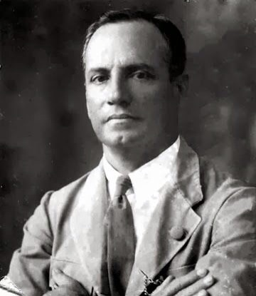

Captain Arthur Andrew Cipriani in a portrait
Below is a timeline of Arthur A. Cipriani's life & milestones:
- 1875 - Born in Trinidad & Tobago
- 1917 - Became captain of the British West Indies Regiment during WW1
- 1919 - Elected President of the Soldiers and Sailor's Union--- an organisation that promoted the interests of ex-servicemen
- 1923 - Joined the Trinidad Workingmen's Association (TWA) and became the President of it---an increase in membership for the TWA occured during that time
- 1925 - Elected as a representative of the Trinidad & Tobago Legislative Council
- 1926 to 1941 - Became mayor of Port Of Spain (The capital city of Trinidad & Tobago)
- 1934 - Renamed TWA as the Trinidad Labour Party
- 1945 - Died and was buried in the Lapeyrose Cemetery, Port of Spain